Chapter 6 - The 2D/3D Viewer
The 2D/3D Viewer is started using the nmr2d.m script, i.e. type 'nmr2d' at the Matlab prompt to start it.
6.1 General Appearance
The general appearance of the 2D/3D Viewer window consists of two parts and is shown in the figures
below:
A typical data window:
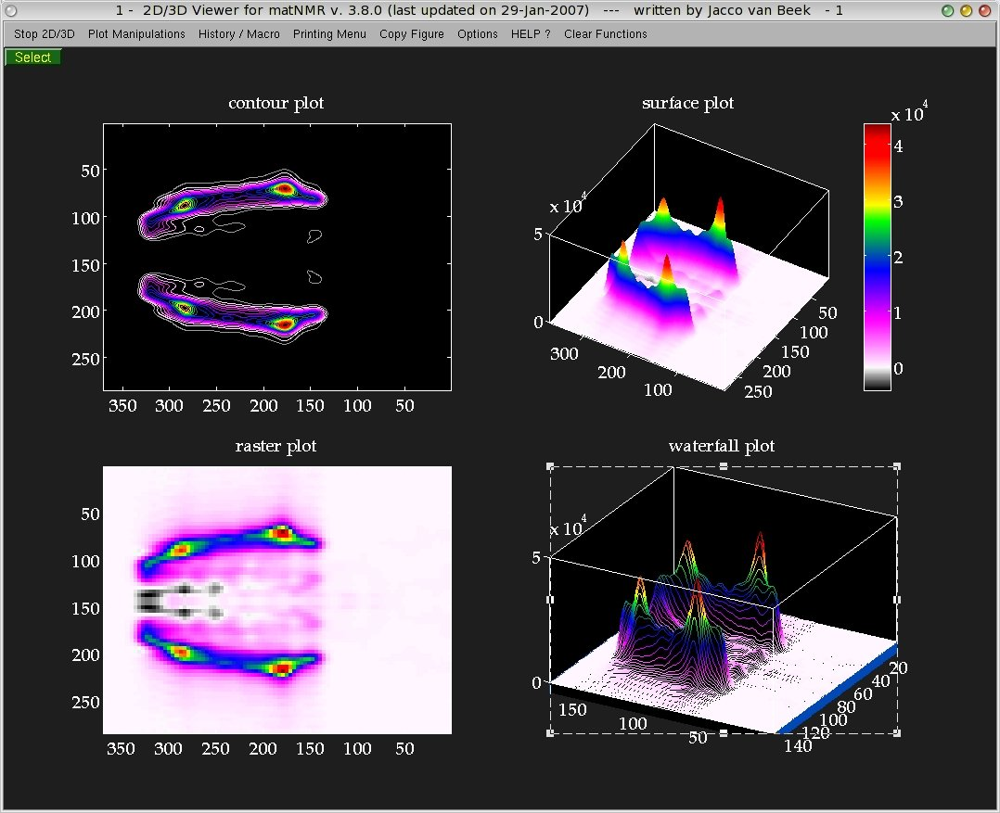
and the panel window:

The 2D/3D Viewer is a multi-window multi-plot routine: an arbitrary number of windows can be
opened (simultaneously) and they can all have an arbitrary number of subplots (only limited by the
number of pre-defined subplot configurations matNMR allows). All data windows are controlled from the
panel window. Any function executed from here will apply to the current axis in the current
2D/3D Viewer window. The current axis is always marked by a box around it. The current figure though
is not always so clearly recognizable. In general the current figure will be pulled in front before
executing a plotting command, making it clear what the current figure window is. In general it is
NOT sufficient to pull the window in front if one wants to make a figure the current figure!
The preferred way of selecting a window therefore is to click on the "Select" button in the top left
corner of the window, or alternatively inside the window (Not on the menubar!).
Although this routine is multi-window multi-plot only one set of variables is kept in memory (for
more information on memory usage see also paragraph 3.7,
"Memory usage"). This means that only the matrix (and axis vectors etc.) belonging to the last
plotted spectrum is stored. This is important to realize because it affects certain routines that
use the matrix for extracting spectral intensities like Integrate, peak picking, get position, etc.
These only function properly for the last plotted spectrum. And although they may not produce any errors,
the result may still be wrong! Some plot parameters are stored into the figure window and they contain
some information on each specific plot in the figure:
-name
-axis vectors: extracting axis coordinates will work properly even when the plot does not belong to
the last plotted spectrum!
-processing history
Furthermore certain properties of the current figure are saved:
-number of subplots
-axis handles
-colorbar flags for each axis
-colorbar handles
-zoom flag
-rotate3D flag
All these parameters are stored into the userdata property of the figure (for more information on
properties of graphics objects see the MATLAB documentation). Extracting this property (e.g. QTEMP=
get(gcf, 'userdata')) will result in a structure variable. Users can add fields to it (in principle
the userdata property is free to be manipulated in any way and can therefore be useful for various
things) but shouldn't removed the fields that matNMR has created sofar as this will produce errors.
.
The functions panel window will be explained in paragraph 6.2, just below and the menubar in the data
windows in paragraph 6.3, "The menubar".
6.2 The panel window
The panel window has been subdivided into the four major plot types currently supported by matNMR,
contours, mesh, Stack 3D and raster plot and a tools menu. They will be explained separately below.
Note that although the functions explained below are separated into discrete categories they can
be used as general functions.
Note that all the items in the "Tools" menu can be started also from the Plotmanipulations
menu in the menubar.
6.2.1 Contours
| Button |
Function |
| Contour | Popup button for selecting the type of contour plot. Currently supported
are the three MATLAB contour routines contour (normal contours), contourf (filled
contours) and contour3 (contours plotted at their corresponding z-level). See the MATLAB
documentation for more information on these routines. |
| Real | Popup button for selecting whether to plot the real, the imaginary or the
absolute value of a matrix. |
| Relative Contours | This function allows plotting relative contours, i.e. the contour
levels are specified as a percentage of the maximum intensity of a matrix. The following input
window will appear:
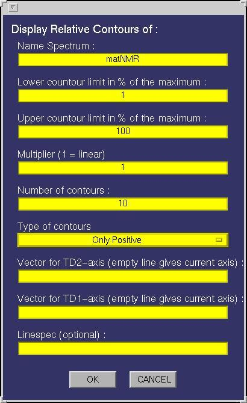
The following fields must be specified:
| Field |
Function |
| Name Spectrum | This must be either a name of a matrix variable in the workspace or a
function generating a matrix as output. In case the variable is a matNMR structure (see also
paragraph 3.5, "matNMR format for spectra") then
the routine will extract the corresponding axis vectors (and history etc) that were saved
into it. If axis vectors are specified in this input window (see below) for Td2 and/or TD1
then these are used and not the axis vectors as saved in the structure. |
| Lower contour limit | Defines the lower contour limit as a percentage of the maximum
intensity of the matrix. |
| Upper contour limit | Defines the upper contour limit as a percentage of the maximum
intensity of the matrix. |
| Multiplier | A number that specifies the non-linearity of the increment between contour
levels. If (Multiplier = 1) then the increment between contour levels is the same for all contour
levels. If (0 < Multiplier < 1) then more contours are drawn towards the high end of the range as defined
by the lower and upper limits. If (Multiplier > 1) then more contour levels are drawn towards the
lower end of the range. |
| Number of contours | The total number of contour levels in the plot. When both positive
and negative contours are asked for then a vector of two numbers may be given to denote different
numbers of contours for positive and negative intensities. If only one number is specified then
both positive and negative intensities have the same number of contours. |
| Type of contours | This determines how the contour levels will be calculated.
This can either be a) positive contours (i.e. relative to the positive maximum), (b) negative contours
(i.e. relative to the negative maximum), c) both positive and negative contours (relative to the
respective positive and negative maxima), d) both positive and negative contours but relative to the
positive maximum or e) both positive and negative contours but relative to the negative maximum of
the spectrum. Note that for the last three options the number
of contours is doubled (if a contour level is set at 0, the number of contours is doubled minus 1).
A special colormap will be generated when printing both positive and negative contours. |
| Vector for TD2-axis | A variable in the workspace corresponding to the axis vector
for this dimension. Leaving this empty will give an axis in points unless the "Name Spectrum" is a
matNMR structure (see "Name Spectrum"). Specifying an axis vector will overrule any axis vector
saved in the variable structure. |
| Vector for TD1-axis | A variable in the workspace corresponding to the axis vector
for this dimension. Leaving this empty will give an axis in points unless the "Name Spectrum" is a
matNMR structure (see "Name Spectrum"). Specifying an axis vector will overrule any axis vector
saved in the variable structure. |
| Linespec | Leaving this empty will plot the contours as a MATLAB patch (for more
information on this see the MATLAB documentation), meaning it will use a colormap.
Specifying the linespec causes MATLAB to plot the contours as line plots. See the MATLAB documentation
for more information on colormaps and linespec properties. |
| Plotting Macro | Allows for a plotting macro to be executed immediately after
the plot is made, in order to reduce rendering time. See also paragraph 4.4,
"Using macro's". |
|
| Absolute Contours | This function allows plotting absolute contours, i.e. the contour
levels are specified directly by the user. The following input
window will appear:
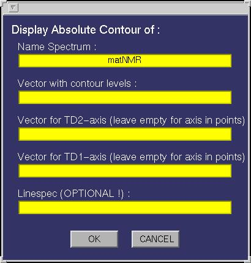
The following fields must be specified:
| Field |
Function |
| Name Spectrum | This must be either a name of a matrix variable in the workspace or a
function generating a matrix as output. In case the variable is a matNMR structure (see also
paragraph 3.5, "matNMR format for spectra") then
the routine will extract the corresponding axis vectors (and history etc) that were saved
into it. If axis vectors are specified in this input window (see below) for Td2 and/or TD1
then these are used and not the axis vectors as saved in the structure. |
| Vector with contour levels | A variable in the workspace containing the contour
level intensities. |
| Vector for TD2-axis | A variable in the workspace corresponding to the axis vector
for this dimension. Leaving this empty will give an axis in points unless the "Name Spectrum" is a
matNMR structure (see "Name Spectrum"). Specifying an axis vector will overrule any axis vector
saved in the variable structure. |
| Vector for TD1-axis | A variable in the workspace corresponding to the axis vector
for this dimension. Leaving this empty will give an axis in points unless the "Name Spectrum" is a
matNMR structure (see "Name Spectrum"). Specifying an axis vector will overrule any axis vector
saved in the variable structure. |
| Linespec | Leaving this empty will plot the contours as a MATLAB patch (for more
information on this see the MATLAB documentation), meaning it will use a colormap.
Specifying the linespec causes MATLAB to plot the contours as line plots. See the MATLAB documentation
for more information on colormaps and linespec properties. |
| Plotting Macro | Allows for a plotting macro to be executed immediately after
the plot is made, in order to reduce rendering time. See also paragraph 4.4,
"Using macro's". |
|
6.2.2 Mesh 3D
| Button |
Function |
| Mesh | Popup button for selecting the type of surface plot. Currently supported
are the eight MATLAB routines mesh (normal mesh), meshc (mesh + contours underneith),
meshz (mesh with curtain), surf (normal surface), surfc (surface with a
contour plot underneith), surfl (surface with lichting effects), pcolor (pseudo-color
plot, i.e. a top-projection of the surface) and waterfall (a waterfall plot). See the MATLAB
documentation for more information on these routines. A word of caution must be made for using the
waterfall plot as it has proven be not so stable in the past! Sometimes it used to take ages to
finish. |
| Real | Popup button for selecting whether to plot the real, the imaginary or the
absolute value of a matrix. |
| Both | Defines whether to draw mesh grid lines in both matrix dimensions or just
along the rows (TD2) or columns (TD1). This property only affects mesh plots, not surface plots. |
| Mesh 3D Plot | This function allows plotting mesh and surface plots. The following input
window will appear:

The following fields must be specified:
| Field |
Function |
| Name Spectrum | This must be either a name of a matrix variable in the workspace or a
function generating a matrix as output. In case the variable is a matNMR structure (see also
paragraph 3.5, "matNMR format for spectra") then
the routine will extract the corresponding axis vectors (and history etc) that were saved
into it. If axis vectors are specified in this input window (see below) for Td2 and/or TD1
then these are used and not the axis vectors as saved in the structure. |
| Azimuthal | Defines the azimuth angle or better the horizontal rotation angle for the
resulting view (see MATLAB documentation for more information on view). The view can
always be changed by using the Rotate3D function in the Tools section (described below). |
| Elevation | Defines the elevation angle or better the vertical rotation angle for the
resulting view (see MATLAB documentation for more information on view). The view can
always be changed by using the Rotate3D function in the Tools section (described below). |
| Vector for TD2-axis | A variable in the workspace corresponding to the axis vector
for this dimension. Leaving this empty will give an axis in points unless the "Name Spectrum" is a
matNMR structure (see "Name Spectrum"). Specifying an axis vector will overrule any axis vector
saved in the variable structure. |
| Vector for TD1-axis | A variable in the workspace corresponding to the axis vector
for this dimension. Leaving this empty will give an axis in points unless the "Name Spectrum" is a
matNMR structure (see "Name Spectrum"). Specifying an axis vector will overrule any axis vector
saved in the variable structure. |
| Plotting Macro | Allows for a plotting macro to be executed immediately after
the plot is made, in order to reduce rendering time. See also paragraph 4.4,
"Using macro's". |
|
6.2.3 Stack 3D
3D Stack plots are plots in which, along one dimension of the matrix, the lines are stacked such
that a spatial view is obtained. This can be very useful for watching decays etc.
| Button |
Function |
| Lower z-limit | Defines the lower zlimit for the plot. If not defined before plotting
a new matrix then matNMR will set it to the default axis settings after plotting the matrix. |
| Upper z-limit | Defines the upper zlimit for the plot. If not defined before plotting
a new matrix then matNMR will set it to the default axis settings after plotting the matrix. |
| Real | Popup button for selecting whether to plot the real, the imaginary or the
absolute value of a matrix. |
| Y-dir default | Defines the default axis direction for the plot. Usually this is
set to right-to-left for NMR spectra but this is not necessarily what is needed for a plot. |
| Stack 3D | This function allows plotting 3D stack plots. The following input
window will appear:
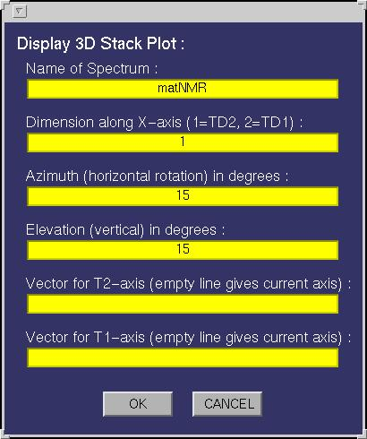
The following fields must be specified:
| Field |
Function |
| Name Spectrum | This must be either a name of a matrix variable in the workspace or a
function generating a matrix as output. In case the variable is a matNMR structure (see also
paragraph 3.5, "matNMR format for spectra") then
the routine will extract the corresponding axis vectors (and history etc) that were saved
into it. If axis vectors are specified in this input window (see below) for Td2 and/or TD1
then these are used and not the axis vectors as saved in the structure. |
| Dimension along x-axis | Determines which matrix dimension to put along the x-axis,
i.e. in which direction to stack the rows/columns. |
| Azimuthal | Defines the azimuth angle or better the horizontal rotation angle for the
resulting view (see MATLAB documentation for more information on view). The view can
always be changed by using the Rotate3D function in the Tools section (described below). |
| Elevation | Defines the elevation angle or better the vertical rotation angle for the
resulting view (see MATLAB documentation for more information on view). The view can
always be changed by using the Rotate3D function in the Tools section (described below). |
| Vector for TD2-axis | A variable in the workspace corresponding to the axis vector
for this dimension. Leaving this empty will give an axis in points unless the "Name Spectrum" is a
matNMR structure (see "Name Spectrum"). Specifying an axis vector will overrule any axis vector
saved in the variable structure. |
| Vector for TD1-axis | A variable in the workspace corresponding to the axis vector
for this dimension. Leaving this empty will give an axis in points unless the "Name Spectrum" is a
matNMR structure (see "Name Spectrum"). Specifying an axis vector will overrule any axis vector
saved in the variable structure. |
| Plotting Macro | Allows for a plotting macro to be executed immediately after
the plot is made, in order to reduce rendering time. See also paragraph 4.4,
"Using macro's". |
|
| z-axis | Allows switching the z-axis on or off from displaying. |
| y-tick | Allows switching the tickmarks along the y-axis on or off from displaying. |
6.2.4 Raster 2D
The raster plot can be used for making quick low-resolution pictures of big spectra by undersampling
the matrix. The matrix is divided in blocks as big as the sampling size and the intensity over the
block is integrated.
| Button |
Function |
| Sampling | Defines the sampling size (in points) for the current spectrum. Note that
setting a value into this edit button immediately takes effect on the current matrix. |
| Real | Popup button for selecting whether to plot the real, the imaginary or the
absolute value of a matrix. |
| Raster 2D | This function allows plotting 2D raster plots. The following input
window will appear:
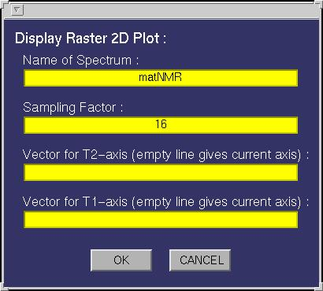
The following fields must be specified:
| Field |
Function |
| Name Spectrum | This must be either a name of a matrix variable in the workspace or a
function generating a matrix as output. In case the variable is a matNMR structure (see also
paragraph 3.5, "matNMR format for spectra") then
the routine will extract the corresponding axis vectors (and history etc) that were saved
into it. If axis vectors are specified in this input window (see below) for Td2 and/or TD1
then these are used and not the axis vectors as saved in the structure. |
| Dimension along x-axis | Determines which matrix dimension to put along the x-axis,
i.e. in which direction to stack the rows/columns. |
| Azimuthal | Defines the azimuth angle or better the horizontal rotation angle for the
resulting view (see MATLAB documentation for more information on view). The view can
always be changed by using the Rotate3D function in the Tools section (described below). |
| Elevation | Defines the elevation angle or better the vertical rotation angle for the
resulting view (see MATLAB documentation for more information on view). The view can
always be changed by using the Rotate3D function in the Tools section (described below). |
| Vector for TD2-axis | A variable in the workspace corresponding to the axis vector
for this dimension. Leaving this empty will give an axis in points unless the "Name Spectrum" is a
matNMR structure (see "Name Spectrum"). Specifying an axis vector will overrule any axis vector
saved in the variable structure. |
| Vector for TD1-axis | A variable in the workspace corresponding to the axis vector
for this dimension. Leaving this empty will give an axis in points unless the "Name Spectrum" is a
matNMR structure (see "Name Spectrum"). Specifying an axis vector will overrule any axis vector
saved in the variable structure. |
| Plotting Macro | Allows for a plotting macro to be executed immediately after
the plot is made, in order to reduce rendering time. See also paragraph 4.4,
"Using macro's". |
|
| z-axis | Allows switching the z-axis on or off from displaying. |
| y-tick | Allows switching the tickmarks along the y-axis on or off from displaying. |
6.2.5 Tools
The Tools section contains a few functions that are often needed while working with the 2D/3D
Viewer. All of them can also be found in the "Plot manipulations" entry in the menubar (for more
information on the plot manipulations see paragraph 6.3.2,
"Plot manipulations").
| Button |
Function |
| Cut spectrum | This function allows to make a slice-plot of a 2D spectrum by defining strips of
frequencies in both dimenions. A new variable "QmatNMR.Spec2D3DCutSpectrum" will be created which contains
these blocks of the spectrum. This variable may then be called by any of the plotting routines and the blocks
will be shown separated by a dotted line. After pushing this button use the mouse to define the strips. Afterwards
an input window will be openened and the coordinates can be specified more accurately. NOTE that using the
corresponding function in the menubar avoids having to define the coordinates by mouse again! |
| Define plot | It is often most efficient to make a low-quality plot of a spectrum, zoom
into the region of interest and then replot it in high quality. This function allows to do so, by creating
a new variable "QmatNMR.Spec2D3DDefinePlot" with the zoomed-in part of the spectrum and the axes. This
variable may then be used as input for the subsequent plotting action. |
| Get Position | Like the "Get Position" routine in the main window (see paragraph
5.1, "General Appearance") this routine provides a means
of scanning the matrix. The coordinates in both dimensions for the position of the crosshair and
the intensity is shown on screen. Note that the intensity is only valid for the last plotted
spectrum. The coordinates should always be correct though! |
| Axis rulers | This allows changing the axis vectors for the current matrix. Similar to
the way it is done in the main window (see paragraph 5.2.5,
"Plot manipulations") the axis vectors can be set to either PPM, Hz, time, points or to a user-
defined vector. The following window is opened:
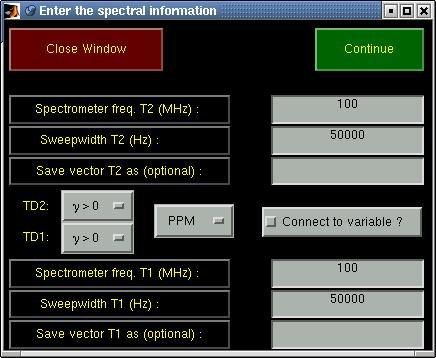
First the type of axis vector (PPM, Hz, time, points, user-defined) can be chosen. The spectral width
must be specified for PPM and Hz axes and for a PPM axis also the carrier frequency. For
axes in Hz also the signs of the gyromagnetic ratios of the nuclei that correspond to the respective
dimensions of the spectrum must be specified.
The button labeled "Connect to variable?" can be checked if the new axes must be connected to the
spectrum. If the spectrum wasn't yet a matNMR structure then it will be made into one in order to
be able to allow the connection.
Pressing the "Continue" button proceeds the routine and one is asked for the reference values. After
that the reference peak can be specified by using the crosshair mouse pounter and clicking on the
desired reference peak (This may seem strange but is necessary because of a MATLAB bug. Specifying the
reference peak before asking its value leads to a mess with the main and input window). If a name is
given for the new axis vector(s) then it/they will be saved in the workspace after calculating it.
|
| Title/labels | This routine provides a means of changing the title and axes labels
of the current axis. A window will appear looking like:
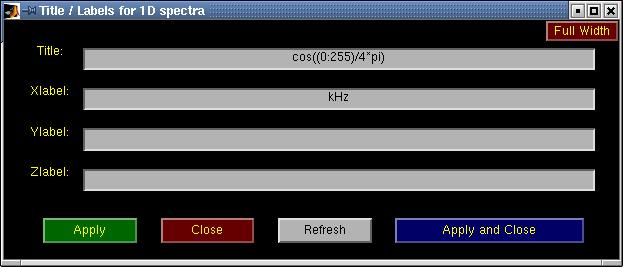
Pressing the "Apply" button will update all labels immediately. The "Refresh" is used for updating
the text labels currently written in this window to the labels in the current axis (useful when
having this window opened continously). |
| Print | Prints the current 2D/3D Viewer window to the default printer as defined in
the $matlabroot/toolbox/local/printopt.m file. |
| Hold | Switches the hold flag for the current axis. Upon activating this, every
consecutive plot is superposed on the existing plots. (see the MATLAB
documentation for more information on the hold command). |
| Zoom | Switches the zoom flag for the current window. Upon activating this, the
rotate3D flag is switched off and the standard MATLAB zoom is activated (see the MATLAB
documentation for more information on the zoom command). Zooming in can be done using
the left mouse button (either by clicking or by dragging a box around the desired area)
whereas the right button zooms out. |
| Rotate3D | Switches the rotate3D flag for the current window. Upon activating
this the zoom flag is switched off and the standard MATLAB rotate3d command is activated
(see the MATLAB documentation for more information on the rotate3d command). The plot
can be rotated by moving the mouse while having the left mouse button pressed in the desired
axis. |
| Colorbar | Adds or removes a colorbar from the current axis. |
| Colormap | Allows changing of the colormap for the current 2D/3D Viewer window.
Beware that colormaps are a figure property and therefore different axes cannot have different
color maps. This popup button contains a few of the standard MATLAB colormaps and some others. The
QPosNeg colormaps are altered upon plotting a contour plot with both positive and
negative contours, such that the cental colour always denotes the zero-level. Selecting
these in any other case will show the full colormap. To adjust those colormaps according to the
degree of positive and negative intensities in the spectrum, select "Adjust PosNeg".
All colormaps may be inverted by selecting the corresponding item from the list. |
| Shading | Sets the shading property (for more information see the MATLAB
documentation). |
6.3 The menubar
The menubar contains some useful features for the 2D/3D Viewer. All entries will be explained
here separately. Note that many of the functions may also be accessed from the
context menus that are defined. Context menus may be accessed by right-clicking anywhere within the
figure window, but not on top of an axis! To reduce rerendering by Matlab, it is most efficient to
move the 2D/3D viewer window to the far left of the screen, and to access the context menu from the
far right of the 2D/3D viewer window.
6.3.1 Stop 2D/3D Viewer
This function allows close the current 2D/3D Viewer window, stop the 2D/3D Viewer, stop matNMR
completely or quit MATLAB. Depending on whether the exit safety flag was set (see paragraph 2.2.1,
"General options") an input window will appear to ask
for confirmation. For quiting MATLAB the user is always asked for confirmation. Note that when
stopping matNMR ALL windows belonging to matNMR are closed, including the main window.
Stopping only the 2D/3D Viewer will not affect any other routines though.
6.3.2 Plot manipulations
This menu contains all kinds of functions to change the appearance of the current axis and/or
the current 2D/3D Viewer window.
| Name |
Function |
| New window | This will open a new 2D/3D Viewer window and make it the current
figure window. The number of subplots are the same as in the window from which this function
was started. The zoom/rotate3D state is also kept. The colormap and colorbar settings are set
back to default however. |
| Subplots | This changes the subplot configuration in the current window. An
extensive set of subplot configurations are allowed. To efficiently work with subplots please refer to the
support of 3D matrices, paragraph 4.2, "1D, 2D and 3D mode", and
the use of plotting macros, paragraph 4.4, "Using macro's". |
| Zoom | Switches the zoom flag for the current figure window. If the zoom is
activated then the rotate3D is deactivated. This uses the MATLAB zoom function. Please
see the MATLAB documentation for more information. |
| Rotate3D | Switches the rotate3D flag for the current figure window. If the rotate3D is
activated then the zoom is deactivated. This uses the MATLAB rotate3d function. Please
see the MATLAB documentation for more information. |
| Plotting Functions | This contains all plotting routines supported by matNMR
and not just those presented in the panel window.
| Name |
Function |
| Bar 2D | Creates a 2D bar plot. The following input
window will appear:
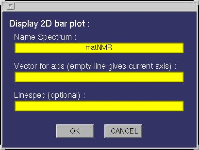
The following fields must be specified:
| Field |
Function |
| Name Spectrum | This must be either a name of a matrix variable in the workspace or a
function generating a matrix as output. In case the variable is a matNMR structure (see also
paragraph 3.5, "matNMR format for spectra") then
the routine will extract the corresponding axis vectors (and history etc) that were saved
into it. If axis vectors are specified in this input window (see below) for Td2 and/or TD1
then these are used and not the axis vectors as saved in the structure. |
| Vector for x-axis | A variable in the workspace corresponding to the axis vector
for this dimension. Leaving this empty will give an axis in points unless the "Name Spectrum" is a
matNMR structure (see "Name Spectrum"). Specifying an axis vector will overrule any axis vector
saved in the variable structure. |
| Linespec | Leaving this empty will plot the bars as done using the standard
bar plotting routine in Matlab (for more information on this see the MATLAB documentation)
, meaning it will use a colormap. Specifying the linespec causes MATLAB to plot the bars as
line plots. See the MATLAB documentation for more information on colormaps and linespec properties. |
| Plotting Macro | Allows for a plotting macro to be executed immediately after
the plot is made, in order to reduce rendering time. See also paragraph 4.4,
"Using macro's". |
|
| Bar 3D | Creates a 3D bar plot. The following input
window will appear:
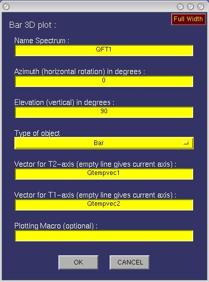
The following fields must be specified:
| Field |
Function |
| Name Spectrum | This must be either a name of a matrix variable in the workspace or a
function generating a matrix as output. In case the variable is a matNMR structure (see also
paragraph 3.5, "matNMR format for spectra") then
the routine will extract the corresponding axis vectors (and history etc) that were saved
into it. If axis vectors are specified in this input window (see below) for Td2 and/or TD1
then these are used and not the axis vectors as saved in the structure. |
| Azimuth | The azimuthal angle for a 3D view, in degrees. |
| Elevation | The elevation angle for a 3D view, in degrees. |
| The type of object | Whether square bars are wanted or cylinders. |
| Vector for TD2 | A variable in the workspace corresponding to the axis vector
for this dimension. Leaving this empty will give an axis in points unless the "Name Spectrum" is a
matNMR structure (see "Name Spectrum"). Specifying an axis vector will overrule any axis vector
saved in the variable structure. |
| Vector for TD1 | A variable in the workspace corresponding to the axis vector
for this dimension. Leaving this empty will give an axis in points unless the "Name Spectrum" is a
matNMR structure (see "Name Spectrum"). Specifying an axis vector will overrule any axis vector
saved in the variable structure. |
| Plotting Macro | Allows for a plotting macro to be executed immediately after
the plot is made, in order to reduce rendering time. See also paragraph 4.4,
"Using macro's". |
|
| Contours (abs) | More details can be found in the section of the panel window. |
| Contours (rel) | More details can be found in the section of the panel window. |
| Line plot | This function creates a line plot of the 1D spectrum that it requires
as input. In case a 2D matrix is given then this results in a series of line plots distributed
over the available subplots.
The following input window will appear:
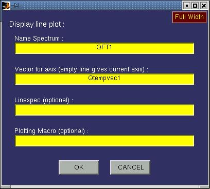
The following fields must be specified:
| Field |
Function |
| Name Spectrum | This must be either a name of a matrix variable in the workspace or a
function generating a matrix as output. In case the variable is a matNMR structure (see also
paragraph 3.5, "matNMR format for spectra") then
the routine will extract the corresponding axis vectors (and history etc) that were saved
into it. If axis vectors are specified in this input window (see below) for Td2 and/or TD1
then these are used and not the axis vectors as saved in the structure. |
| axis | Whether or not to print an axis system around the polar plot.
Only limited control is available over the axis system currently. |
| Linespec | Leaving this empty will plot the bars as done using the standard
line plotting routine in Matlab (for more information on this see the MATLAB documentation).
Specifying the linespec may result in different colours and markers and such. See the MATLAB
documentation for more information on linespec properties.
|
| Plotting Macro | Allows for a plotting macro to be executed immediately after
the plot is made, in order to reduce rendering time. See also paragraph 4.4,
"Using macro's". |
|
| Polar plot | This function creates a polar plot using a stereographic projection.
A 2D matrix where the dimensions correspond to two polar angles is assumed.
The following input window will appear:
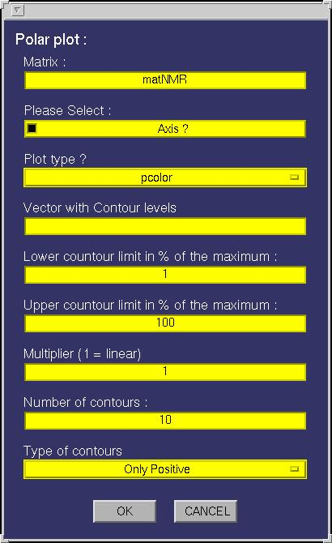
The following fields must be specified:
| Field |
Function |
| Name Spectrum | This must be either a name of a matrix variable in the workspace or a
function generating a matrix as output. In case the variable is a matNMR structure (see also
paragraph 3.5, "matNMR format for spectra") then
the routine will extract the corresponding axis vectors (and history etc) that were saved
into it. If axis vectors are specified in this input window (see below) for Td2 and/or TD1
then these are used and not the axis vectors as saved in the structure. |
| axis | Whether or not to print an axis system around the polar plot.
Only limited control is available over the axis system currently. |
| plot type | This determines whether to print it as a surface (pcolor) or
as a contour plot. If the pcolor is chosen then no other options must be given. If absolute
contours are asked for then only the vector with contour levels must be given. For relative
contours all but the vector of contour levels must be given. Please see the corresponding
sections for more details on contour plots and
surface plots. |
| Plotting Macro | Allows for a plotting macro to be executed immediately after
the plot is made, in order to reduce rendering time. See also paragraph 4.4,
"Using macro's". |
|
| Raster 2D | More details can be found in the section of the panel window. |
| Surface | More details can be found in the section of the panel window. |
| Stack 3D | More details can be found in the section of the panel window. |
|
| Features |
| Field |
Function |
| Axis rulers | This allows changing the axis vectors for the current matrix. Similar to
the way it is done in the main window (see paragraph 5.2.5,
"Plot manipulations") the axis vectors can be set to either PPM, Hz, time, points or to a user-
defined vector. The following window is opened:
First the type of axis vector (PPM, Hz, time, points, user-defined) can be chosen. The spectral width
must be specified for PPM and Hz axes and for a PPM axis also the carrier frequency. For
axes in Hz also the signs of the gyromagnetic ratios of the nuclei that correspond to the respective
dimensions of the spectrum must be specified.
The button labeled "Connect to variable?" can be checked if the new axes must be connected to the
spectrum. If the spectrum wasn't yet a matNMR structure then it will be made into one in order to
be able to allow the connection.
Pressing the "Continue" button proceeds the routine and one is asked for the reference values. After
that the reference peak can be specified by using the crosshair mouse pounter and clicking on the
desired reference peak (This may seem strange but is necessary because of a MATLAB bug. Specifying the
reference peak before asking its value leads to a mess with the main and input window). If a name is
given for the new axis vector(s) then it/they will be saved in the workspace after calculating it.
|
| Color Bar | Adds or removes a colorbar from the current axis. If the colorbar
must be printable in MIF format then select the corresponding button in the input window.
The colorbar will then be plotted as 150 filled contours instead of the default image. |
| Color Mapping (caxis) | This allows setting the colormapping for the current axis,
i.e. what range of values the colormap should cover. The minimum and maximum specified here
are connected to the first and last color in the colormap. This uses the MATLAB command caxis.
See the MATLAB documentation for more information. |
| Print | Prints the current 2D/3D Viewer window to the default printer as defined in
the $matlabroot/toolbox/local/printopt.m file. |
| Super title | Allows writing a line of text into the super-title axis. This axis
is invisible and cannot be accessed directly. A text of certain font size and rotation angle will be
written into the axis which by default is put in the top of the figure. The position of the text can be
changed by dragging the mouse while clicking on the text with the left button. Clicking the right
mouse over the text will bring up a menu to change the text properties. |
| Title/axis labels | This routine provides a means of changing the title and axes labels
of a plot. A window will appear looking like:
Pressing the "Apply" button will update all labels immediately. The "Refresh" is used for updating
the text labels currently written in this window to the labels in the current plot (useful when
having this window opened continously). |
| Extract area | Allows extracting part of the current spectrum by mouse selection.
Dragging a box using the mouse will define the limits. A window will appear for confirmation.
Input is done in the unit of the axis vectors. |
| Define cut limits | This function is used to make a contour plot of the current spectrum
while cutting away certain areas. An input window will appear looking like:
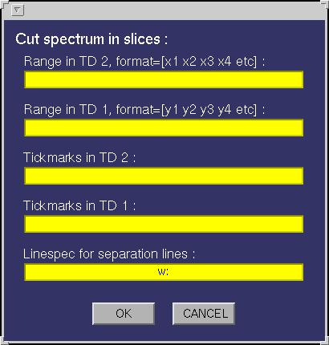
Ranges in both TD1 and TD2 must be specified in pairs of coordinates in the unit of the axis
vectors, defining the beginning and end of a range. A new variable "QmatNMR.Spec2D3DCutSpectrum"
will be generated, which can then be used as input to any of the various plot types.
In total this determines the ranges in both dimensions of the spectrum. A new matrix will be
generated, using the current matrix, consisting only of the desired areas. An arbitrary number of ranges may be specified for each dimension. In the plot separation lines will be plotted which look
is depending on the linespec that can be given in the input window. By default a dotted white line
is drawn. Tickmarks can also be specified for each dimension separately.
|
| Define plot limits | It is often most efficient to make a low-quality plot of a spectrum, zoom
into the region of interest and then replot it in high quality. This function allows to do so, by creating
a new variable "QmatNMR.Spec2D3DDefinePlot" with the zoomed-in part of the spectrum and the axes. This
variable may then be used as input for the subsequent plotting action. |
| Get position | Like the "Get Position" routine in the main window (see paragraph
5.1, "General Appearance") this routine provides a means
of scanning the matrix. The coordinates in both dimensions for the position of the crosshair and
the intensity is shown on screen. Note that the intensity is only valid for the last plotted
spectrum. The coordinates should always be correct though! |
| Get integral | Allows for getting the absolute integral of a designated part
of the spectrum. The range must be specified using the mouse (drag a box using the left mouse
button). The sum intensity over the specified region of the spectrum is given in the MATLAB
main window (MATLAB prompt). |
| Set integral | Allows for setting the absolute integral of the entire spectrum.
A range must be specified using either the mouse (drag a box using the left mouse button) or
the input window. Input of the coordinate ranges is given in the unit of the axis vectors.
The sum intensity over the specified region of the spectrum is set to the integral value given
in the input window. |
| Create CPMs | Allows the creation of Conditional Probability Matrices (CPMs) from crosspeaks
in 2D NMR spectra. For a description of the idea please see the paper JACS 127 (2005), 4466-4475.
By selecting the area of a crosspeak, using the left mouse button, the CPMs are defined in a new
window. The new window will show the selected area, the projections onto both axes and the corresponding
CPMs. Before starting one must define a lower threshold and the number of contours used in the plots
of the CPMs. For best results use a low threshold, e.g. 1%, and many contours, e.g. 25.
NOTE 1: the inherent numerical instability of CPMs makes it necessary to limit the selected region to fit
closely around the peak. Areas that contain much noise will invariably produce lots of artefacts in the CPMs.
NOTE 2: should the routine fail to produce nice plots, typically caused by numerical instabilities, then
it is foreseen that the CPMs are replotted manually. Directly after making a CPM, click on the corresponding axis
that needs to be replotted. Then make a plot in the normal way, for CPMs typically a relative contour plot.
The axis vectors for the CPMs are called QmatNMR.CPMvec1 (TD2) and QmatNMR.CPMvec2 (TD1), whilst the CPMs themselves are called
QmatNMR.CPM1 and QmatNMR.CPM2. Thus the plots can be redrawn at will.
NOTE 3: the super title that is drawn in the window by default can, as usual, be edited by right-clicking on it!
|
| Peak picking | MatNMR offers a simple (but limited) peak picking routine.
Basically peaks can be specified and the coordinates and intensities belonging to these
peaks are stored in a list. The variable used by matNMR is QmatNMR.PeakList. Peak lists are
saved in the structure (for more information see paragraph 3.5,
"matNMR format for spectra") that contains either a spectrum or an FID. When redrawing
a spectrum matNMR will detect the peak list and redraw the lines between and labels for all peaks.
Lines can be deleted at any point by clicking the left mouse button on them. Text labels can
be changed by clicking the left mouse button on them.
There are two peak picking modes: one which just detects the peaks and puts a text label near the
peak and one in which also lines are drawn between consecutive peaks. Whether or not a line must
be drawn between two peaks is also stored in the list. Peaks are selected by dragging a box, using
the left mouse button, over a region in the spectrum in which the peak is situated. Depending on
the search specifications a peak is detected and added to the list. Clicking the middle mouse button
will remove the last entry of the peak list. Using the "clear list" entry from the menubar will
delete the entire list.
Peak picking will stay active until it is stopped by clicking the right mouse button. It can be
activated again at any time and new peaks will just be appended to the list.
The peak list can be connected to either a structure variable in the workspace (note that if the
designated variable is not already a structure it will be turned into one) or an ASCII file on
disk.
Peak picking also works after the "Cut contour plot" function has been executed. Furthermore when
a contour plot contained a peak list at the time that the "Cut contour plot" was executed, it
will be redrawn into the sliced plot properly. Changing the axis vectors, using the "Axis rulers"
option will also not affect the peak list as long as axis vectors with linear increments are used.
The coordinates in the peak list will be transformed to the corresponding coordinates in the
units of the new axis vectors.
|
|
| Direct Manipulations | The rest of this menu consists of various axis properties.
More explanation concerning these can be found in the MATLAB documentation. Note the difference
between changing plot properties using this menu and by changing the properties using the
options menu (see also paragraph 2.2, "Setting up matNMR"):
changes made with these functions only affect the current plot and not the general matNMR
settings. |
6.3.3 History / Macro
| Name |
Function |
| Show History | This routine shows the processing history for the current spectrum
(either 1D or 2D). A window will appear looking like:
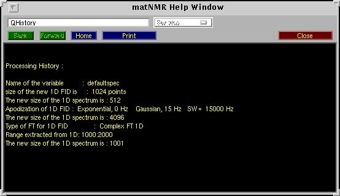
The "Print" button allows to print the history to a printer or to disk. A separate window will be
opened in which the history is plotted as graphical text (Unfortunatelt this is necessary because it is
much more difficult to print text in UI-controls than graphical text in MATLAB).
|
| Start recording macro | Starts the recording of a new plotting macro (see also paragraph
4.4, "Using macro's"). |
| Stop recording macro | Stop the recording of a macro. An input window
will appear to ask for a name of a variable in the workspace to store the new macro in.
(see also paragraph 4.4, "Using macro's") |
| Execute macro | This routine executes a macro.
(see also paragraph 4.4, "Using macro's") |
| Execute macro stepwise | This routine executes a macro stepwise. The same
window as used for "Reprocess from history stepwise" (see above) will appear . |
6.3.4 Printing menu
The printing menu is a general feature available from all matNMR windows that is used for printing.
Using a separate window the MATLAB print command (see the MATLAB documentation for more information
on print) can be executed. More information on the printing menu is given in paragraph 7.1,
"Printing menu".
6.3.5 Copy figure
This function will copy the current view of the main window into a separate window, but without
the UI-controls. This will give something like:
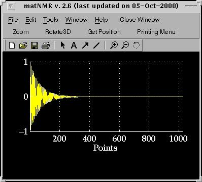
The menubar of this new window contains the standard MATLAB menubar which has some useful
features for printing and saving the figure. It also offers the possibility to change axis properties
and stuff (More information on this menubar can be found in the MATLAB documentation). Additional
features in the menubar are the MATLAB zoom and rotate3D functions, the matNMR "Get Position" (for more
information see paragraph 5.1, "General appearance") and the
printing menu (for more information see paragraph 7.1,
"Printing menu").
6.3.6 Options
This menu contains a subset of matNMR properties that can be changed as for the 2D/3D
Viewer not all menus are needed. Please use the menu in the main window for changing all
other options. This menu allows changing the default settings of the screen settings and
the text properties in matNMR as is described in detail in paragraph 2.2,
"Setting up matNMR (options)".
6.3.7 Help
Besides the simple "About matNMR" and "Copyright" notices this contains a direct link to
this manual from inside MATLAB. The browser, defined in the $matlabroot/toolbox/local/docopt.m
file, will be opened and the matNMR manual will appear (See the MATLAB documentation for more
information on the MATLAB web and docopt commands). As the manual is included in the matNMR
distribution reading the manual should be faster than using the matNMR website.
6.3.8 Clear functions
This performs the MATLAB "clear functions" command. All compiled functions are deleted from
memory forcing MATLAB to recompile each function again upon running it. This is useful when working
with your own m-files (or changing the matNMR code) to force MATLAB to use the altered function (See
the MATLAB documentation for more information on the MATLAB clear command). Furthermore the mouse
pointer is set to an arrow head.